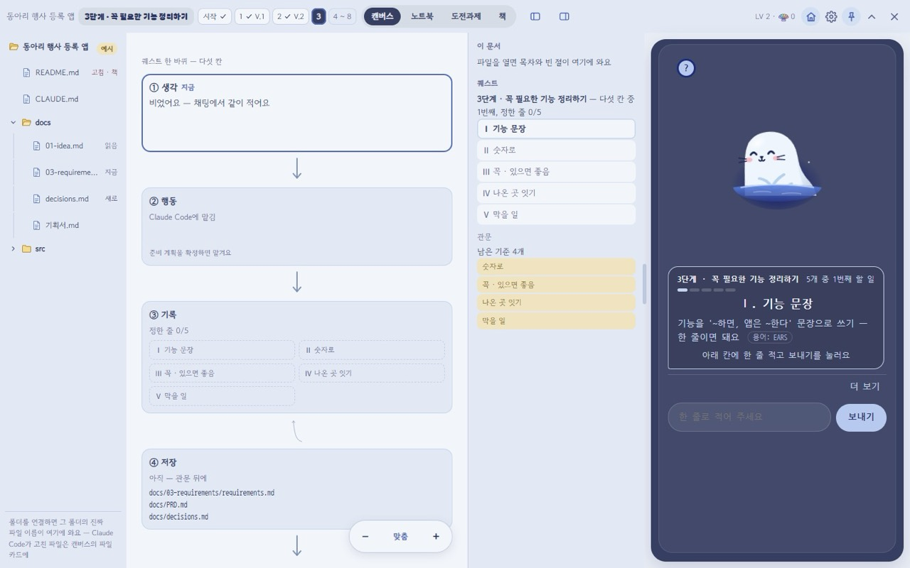
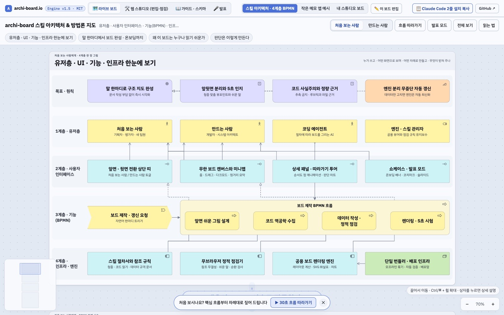

- 무엇
- 바이브 코딩 길잡이 데스크톱 앱
- 언제
- 2026.09 – 11
- 내 몫
- 팀장 · 총괄 · AI 연동 (5인 팀)
- 결과물
- Mac · Windows · 우분투 앱, 릴리스 15번
- 상태
- 끝. 11.08 제출 · 11.13 발표 · 평가 Pass
만든 것
- 15
- 릴리스 app-v4.0.0 – v11.3.0
- 3
- 운영체제 Mac · Windows · 우분투
- 8
- 단계 관문과 이해 확인
- 19
- 장 10분 발표 덱

근거
누구나 열어 볼 수 있는 주소만 놓았습니다.
Floe2026.09 – 11 · 끝

함께
5인 팀으로 만들었습니다. 화면과 마스코트 플로로, 소개 영상은 팀 작품입니다.
다음 작품
archi-board
코드와 문서를 읽어 아키텍처 보드 한 장을 그리는 Claude Code 스킬
